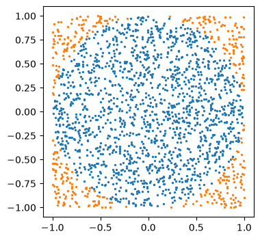

Double Integrals and Monte Carlo Integration#
A double integral is the volume under the surface \(z = f(x, y)\) over a region \(R\). We compute it as an iterated integral: first in \(y\) (with \(x\) fixed), then in \(x\): $\( \iint_R f\,dA = \int_a^b \int_{g(x)}^{h(x)} f(x, y)\,dy\,dx. \)$
The inner limits may depend on \(x\); the outer limits are numbers.
import sympy as sp
import numpy as np
import matplotlib.pyplot as plt
from scipy import integrate
x, y = sp.symbols("x y")
Part A. SymPy (exact)#
Give one tuple per variable. The first tuple is the inner integral.
Rectangle: \(\displaystyle\int_0^1 \int_0^2 (x^2 + y)\,dy\,dx = \frac{8}{3}\)
sp.integrate(x**2 + y, (y, 0, 2), (x, 0, 1))
Triangle \(0 \le y \le x \le 1\): the inner limit depends on \(x\), so \(y\) goes first. $\( \int_0^1 \int_0^x xy\,dy\,dx = \frac{1}{8} \)$
sp.integrate(x*y, (y, 0, x), (x, 0, 1))
Polar coordinates for disks: \(x = r\cos\theta\), \(y = r\sin\theta\), and \(dA = r\,dr\,d\theta\) (don’t forget the \(r\)). $\( \iint_{x^2+y^2 \le 1} e^{-(x^2+y^2)}\,dA = \int_0^{2\pi}\int_0^1 e^{-r^2}\,r\,dr\,d\theta = \pi(1 - e^{-1}) \)$
r, t = sp.symbols("r theta")
P = sp.integrate(sp.exp(-r**2) * r, (r, 0, 1), (t, 0, 2*sp.pi))
print(P, "=", P.evalf())
2*pi*(1/2 - exp(-1)/2) = 1.98586530379887
Part B. SciPy (numerical)#
integrate.dblquad(func, a, b, g, h) computes \(\int_a^b \int_{g}^{h} \text{func}\,dy\,dx\) and returns (value, error).
Rule: in SciPy the inner variable always comes first in the function you integrate:
f = lambda y, x: ... # dblquad: inner y first, then outer x
This is the opposite of how we write the integral, \(\int_a^b \int_g^h f(x, y)\,dy\,dx\), where \(x\) comes first. If you write lambda x, y, SciPy silently swaps the variables and gives a wrong answer with no error.
The same rule holds for tplquad: lambda z, y, x, innermost first.
# lambda y, x: inner variable y first
val, err = integrate.dblquad(lambda y, x: x**2 + y, 0, 1, 0, 2)
print("rectangle:", val)
val, err = integrate.dblquad(lambda y, x: x*y, 0, 1, 0, lambda x: x)
print("triangle: ", val)
rectangle: 2.6666666666666665
triangle: 0.125
Part C. Monte Carlo integration#
Idea: integral = area × average value of \(f\). Estimate the average with \(N\) random points: $\( \iint_R f\,dA \approx |R| \cdot \frac{1}{N}\sum_{i=1}^N f(x_i, y_i). \)$
Error \(\approx |R|\,\sigma/\sqrt N\) (\(\sigma\) = std of the \(f\) values). \(100\times\) more points gives only \(1\) more digit.
Why use it? That rate is the same in any dimension, while grid methods need \(10^d\) points in \(d\) dimensions. It is also easy for odd-shaped regions.
The answer is random; fix a seed to make it reproducible.
Example 1 (rectangle). Same integral as Part A: $\( \int_0^1 \int_0^2 (x^2 + y)\,dy\,dx = \frac{8}{3}. \)$
Pick \(x_i\) uniform in \([0, 1]\), \(y_i\) uniform in \([0, 2]\); the area is \(|R| = 1 \times 2 = 2\).
rng = np.random.default_rng(0)
N = 100_000
xs = rng.uniform(0, 1, N)
ys = rng.uniform(0, 2, N)
fv = xs**2 + ys
area = 2
print(f"{area * fv.mean():.4f} +/- {area * fv.std() / np.sqrt(N):.4f} exact: {8/3:.4f}")
2.6615 +/- 0.0041 exact: 2.6667
Example 2 (triangle). The triangle integral from Part A: $\( \int_0^1 \int_0^x xy\,dy\,dx = \frac{1}{8}. \)$
The triangle \(0 \le y \le x \le 1\) sits inside the unit square (area \(1\)). Sample in the square and set \(f = 0\) where \(y > x\).
N = 100_000
xs = rng.uniform(0, 1, N)
ys = rng.uniform(0, 1, N)
fv = xs * ys * (ys <= xs) # zero outside the triangle
area = 1
print(f"{area * fv.mean():.4f} +/- {area * fv.std() / np.sqrt(N):.4f} exact: {1/8:.4f}")
0.1243 +/- 0.0006 exact: 0.1250
Example 3 (area of a disk). We want the area of the unit disk: $\( \iint_{x^2+y^2 \le 1} 1\,dA = \pi. \)$
For a curved region, sample in a box around it (here \([-1,1]^2\), area \(4\)) and count only the points inside. Area \(\approx 4 \times\) (fraction of points inside).
N = 2000
xs = rng.uniform(-1, 1, N)
ys = rng.uniform(-1, 1, N)
inside = xs**2 + ys**2 <= 1
print("pi estimate:", 4 * inside.mean())
plt.figure(figsize=(4, 4))
plt.scatter(xs[inside], ys[inside], s=2)
plt.scatter(xs[~inside], ys[~inside], s=2)
plt.gca().set_aspect("equal")
plt.show()
pi estimate: 3.17

Example 4 (integral over a disk). The polar example from Part A: $\( \iint_{x^2+y^2 \le 1} e^{-(x^2+y^2)}\,dA = \pi(1 - e^{-1}) \approx 1.9859. \)$
Sample in the box \([-1,1]^2\) (area \(4\)) and set \(f = 0\) for points outside the disk.
N = 100_000
xs = rng.uniform(-1, 1, N)
ys = rng.uniform(-1, 1, N)
fv = np.exp(-(xs**2 + ys**2)) * (xs**2 + ys**2 <= 1) # zero outside the disk
area = 4
print(f"{area * fv.mean():.4f} +/- {area * fv.std() / np.sqrt(N):.4f} exact: {float(P):.4f}")
1.9847 +/- 0.0039 exact: 1.9859
Summary#
call |
result |
|
|---|---|---|
SymPy |
|
exact |
SciPy |
|
very accurate number; |
Monte Carlo |
|
rough number, error \(\sim 1/\sqrt N\) |
Exercises#
Do each exercise three ways: SymPy (exact), SciPy (dblquad), Monte Carlo.
Exercise 1. Let \(R\) be the region between \(y = x^2\) (bottom) and \(y = x\) (top) for \(0 \le x \le 1\). Compute $\( \iint_R (x + y)\,dA. \)$
(a) SymPy: the exact value.
(b) SciPy: with dblquad. Remember: lambda y, x, inner variable first.
(c) Monte Carlo: sample in the unit square \([0,1]^2\) with \(N = 10^5\) and set \(f = 0\) outside \(R\) (i.e. unless \(x^2 \le y \le x\)). Print the estimate with its error and compare with (a).
# Exercise 1
Exercise 2. Let \(D\) be the disk of radius \(2\), \(x^2 + y^2 \le 4\). Compute $\( \iint_D (x^2 + y^2)\,dA. \)$
(a) SymPy: the exact value, using polar coordinates.
(b) SciPy: with dblquad (lambda y, x, inner variable first), using \(-2 \le x \le 2\) and \(-\sqrt{4 - x^2} \le y \le \sqrt{4 - x^2}\).
(c) Monte Carlo: sample in the box \([-2,2]^2\) (what is its area?) and set \(f = 0\) outside \(D\). Use \(N = 10^4\) and \(N = 10^6\). How much smaller is the error?
# Exercise 2